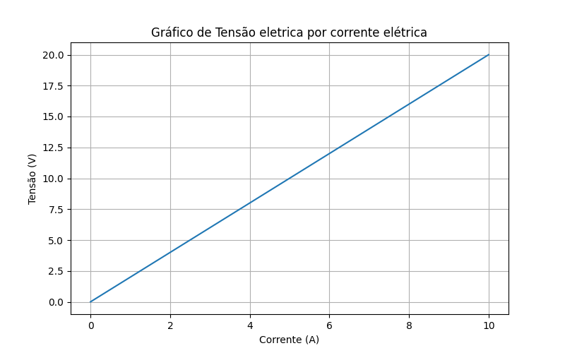
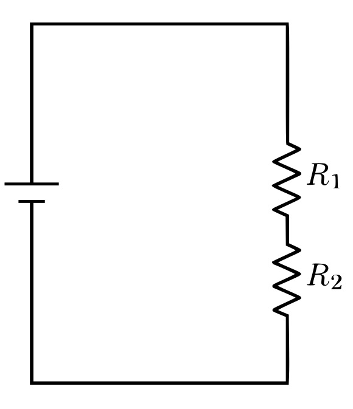
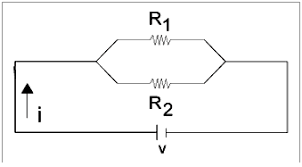

Física 3 - Exercícios e problemas - Unidade 2
Revisão: tensão = energia por carga (\(U = \frac{E}{q}\))
A figura abaixo será usada nas próximas 3 questões abaixo.
Linhas de potencial em uma distribuição plana de carga elétrica.

Fonte: Paulagf27, CC BY-SA 4.0, via Wikimedia Commons


{kind=link}
Revisão: tensão = energia por carga (\(U = \frac{E}{q}\)) - Questão 1
A imagem mostra duas placas: uma com 40 V e outra com 0 V. Suponha que uma carga de \( q = 1\,\mu C \) (microcoulomb) seja deslocada da placa positiva para a negativa. Qual é a energia potencial elétrica perdida por essa carga nesse deslocamento?
| a) 40 μJ | b) 20 μJ | c) 0 μJ | d) 1 J |
Revisão: tensão = energia por carga (\(U = \frac{E}{q}\)) - Questão 2
Observe as setas vermelhas apontando da placa de 40 V para a de 0 V. Isso indica:
a) O campo elétrico aponta no sentido do aumento da energia potencial.
b) O campo elétrico aponta para o lado positivo.
c) O campo elétrico aponta no sentido de queda de potencial elétrico.
d) A corrente elétrica está indo do menor para o maior potencial.
Revisão: tensão = energia por carga (\(U = \frac{E}{q}\)) - Questão 3
Uma carga de \( 2\,\mu C \) é deslocada da linha de 30 V para a linha de 10 V. Qual é a variação da energia elétrica?
| a) 40 μJ | b) 20 μJ | c) –40 μJ | d) –20 μJ |
Revisão: Potência, corrente e tensão - Questão 1
Uma lâmpada elétrica funciona com uma tensão de 120 V e consome uma corrente de 0,5 A. Qual é a potência dissipada por essa lâmpada?
| a) 30 W | b) 60 W | c) 240 W | d) 60 kW |
Revisão: Potência, corrente e tensão - Questão 2
Um chuveiro elétrico opera com potência de 4800 W e está ligado a uma rede de 220 V. Qual é a corrente que circula pelo chuveiro?
| a) 10 A | b) 20 A | c) 22 A | d) 48 A |
Revisão: Potência, corrente e tensão - Questão 3
Se a corrente elétrica que percorre um aparelho se mantiver constante, o que acontecerá com a potência dissipada se a tensão aplicada for dobrada?
a) A potência será dividida pela metade
b) A potência permanecerá constante
c) A potência será duplicada
d) A potência será quadruplicada
Revisão: Lei de Ohm - Questão 1
Um resistor está ligado a uma fonte de 12 V e a corrente que passa por ele é de 3 A. Qual é o valor da resistência elétrica desse resistor?
| a) 4 Ω | b) 9 Ω | c) 36 Ω | d) 15 Ω |
Revisão: Lei de Ohm - Questão 2
Um resistor de 10 Ω é percorrido por uma corrente elétrica de 2,5 A. Qual é a diferença de potencial (tensão) aplicada nesse resistor?
| a) 4 V | b) 12,5 V | c) 25 V | d) 40 V |
Revisão: Lei de Ohm - Questão 3
Em um circuito simples com um resistor, o que acontece com a corrente elétrica se mantivermos a resistência constante e dobrarmos a tensão?
a) A corrente será reduzida à metade.
b) A corrente permanecerá constante.
c) A corrente será duplicada.
d) A corrente será quadruplicada.
Questão 4
Gráfico tensão elétrica e resistência de um condutor.

Qual é a resistência elétrica do condutor representado no gráfico acima?
a) 1 \Omega b) 2 \Omega c) 5 \Omega d) 10 \Omega e) 15 \OmegaAssociação de resistores
Questão 1
Qual é a resistência equivalente à ligação do circuito da imagem, se or resistores tem, respectivamente, valores \(4\Omega\) e \(2\Omega\)?
Resistores \(R_1 e R_2\) em série.

Questão 2
Qual a corrente estabelecida no circuito anterior, se a tensão elétrica for de \(10\,v\)?
Questão 3
Resistores \(R_1 e R_2\) em série.

Qual é a resistência equivalente à ligação do circuito da imagem, se or resistores tem, respectivamente, valores \(6\Omega\) e \(3\Omega \)?
a) 0,1 \Omega b) 1,0 \Omega c) 2,0 \Omega d) 3,0 \Omega e) 5,0 \OmegaQuestão
Se a corrente total que saiu da fonte foi de \(2,0 A\). Calcule:
a) O valor da tensão elétrica;
b) O valor da corrente elétrica em cada resistor.